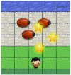
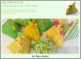
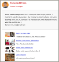
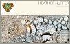

- 
The Pocket-Sized Pest Quest
I created a Frogger-style game for the Udacity course on HTML5 canvas and JavaScript object-oriented programming. I customized the game with features that include an instructional modal, scoring and collectibles.
- 
Beanbag Chickens Tutorial
I designed and implemented a photo-rich tutorial on how to sew chicken beanbags. I wrote detailed text so that a beginning sewer can successfully make this project. I utilized Bootstrap for a responsive design.
- 
Website Performance Optimization
This is the original porfolio from the website performance optimization project. I was able to modify the given code to change its PageSpeed Insights score from 75/100 to 95/100 through minification, compression, asynchronous loading of analytic JavaScript files, and changing the main css file to be inline.
- 
Art Portfolio
I created an art portfolio site to feature artwork I made for an elementary volunteer art program using HTML, CSS, JavaScript with jQuery and Bootstrap. I edited my images using GIMP to facilitate a responsive page. I included Bootstrap modals to allow for more text and bigger images, without crowding the page.